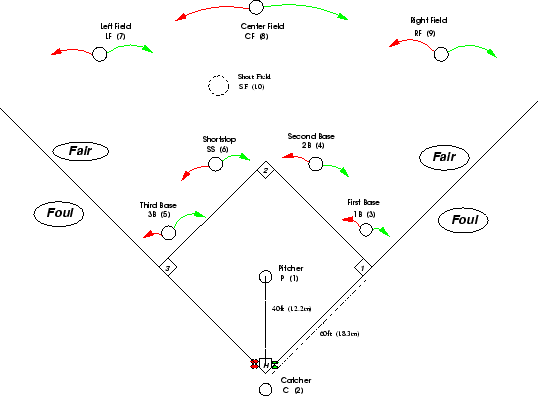

This page is stubbed with placeholder sections. Replace each one with the real info — delete any that don't apply and add your own.
Welcome
Placeholder — a friendly intro: who we are, that everyone's welcome regardless of skill level, and the one or two things that matter most (show up, have fun, be a good teammate).
Game Day Basics
- Where we play
- Placeholder — field name and address (link a map).
- When to arrive
- Placeholder — e.g. 20 minutes before first pitch for warmups.
- What to bring
- Placeholder — glove, water, the right shirt color, etc.
- If you can't make it
- Placeholder — how/when to let a captain know so we can field a full roster.
Gear & What to Wear
Placeholder — team shirt/jersey info, cleats vs. turf shoes (metal cleats are usually banned in slowpitch), and any required equipment.
Slowpitch Rules Cheat Sheet
Placeholder — the key things a new player should know. Common slowpitch points to fill in:
- Arc requirement on pitches (typically 6–12 ft).
- No bunting, no stealing.
- Count, walks, and any "courtesy foul" rules your league uses.
- Run limits per inning / mercy rule.
- Substitution and re-entry rules.
Confirm these against your actual league rulebook before publishing — rules vary by league.
Positions & Lineup
Slowpitch fields 10 players — the usual nine plus a short fielder (SF, #10) in the outfield gap. Here's the standard alignment:

Placeholder — add notes on how our batting order works (everyone bats) and any position assignments.
Team Norms & Etiquette
Placeholder — the unwritten rules: hustle on/off the field, cheer for teammates, respect the umpires, help carry gear, and what we do after games.
Communication
Placeholder — how we coordinate: the group chat link, where the schedule lives, and who to contact with questions.
FAQ
- I haven't played in years — is that okay?
- Placeholder answer.
- How much does it cost?
- Placeholder — dues, per-season fees, etc.
- Can I bring a guest / sub?
- Placeholder answer.